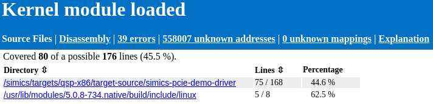
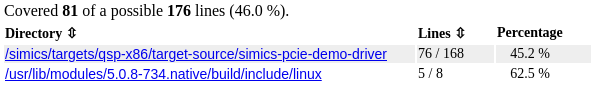
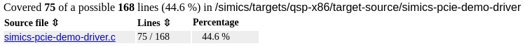
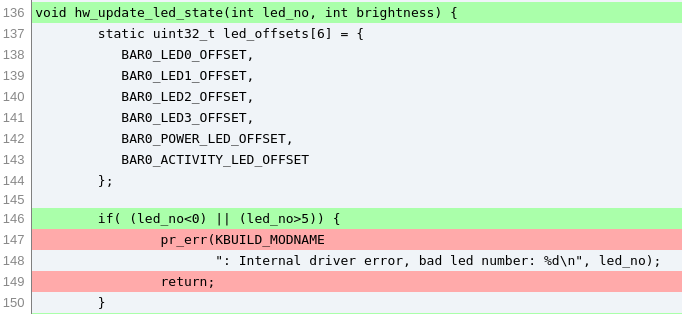
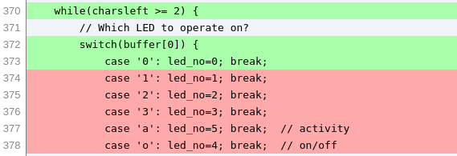
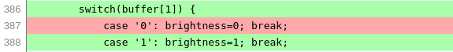
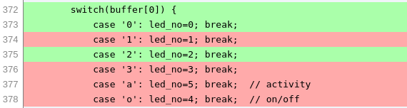
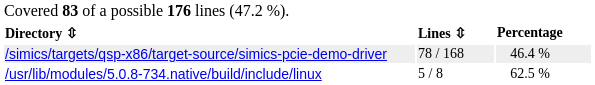
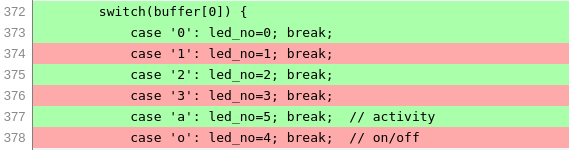
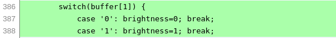

Simics provides a tool for code coverage using binaries with debug information.
This section will describe how to get started with Simics code coverage feature. It will start with an example of code coverage for a kernel module, then provide info about
This section reuses the setup from 2.9.1 to demonstrate code coverage of a kernel module. The tracker parameters file, cl.params, from that example is needed to run this example.
Start Simics with the same script as before:
%simics%/targets/qsp-x86/qsp-clear-linux-pcie-demo.simics
Then run the following commands from the previous example:
simics> machine.software.load-parameters cl.params
simics> machine.software.enable-tracker
OSA control enabled.
simics> machine.software.tracker.set-kernel-modules-path path = "%simics%/targets/qsp-x86/target-source/simics-pcie-demo-driver"
simics> add-pathmap-entry "/root/swbuild" "%simics%/targets/qsp-x86/target-source"
Before starting the simulation, start collecting coverage for all Linux tracker Kernel nodes:
simics> collect-coverage context-query="/**/Kernel/**" name="kernel_module" -running
coverage_kernelmodule_0 is collecting coverage for /**/Kernel/**
Start the simulation and run until the system is booted and the simulation stops. Note that the simulation is slower when the Linux tracker and code coverage is used.
simics> run
...
Autologin as "simics" was done on "machine.mb.sb.com[0] - serial console".
Setting new inspection object: machine.mb.cpu0.core[1][0]
simics>
This script automatically runs insmod when the Linux shell is reached and then stops the simulation.
The output from the serial console should be:
simics@cl-qsp ~ $ sudo insmod simics-pcie-demo-driver.ko
simics@cl-qsp ~ $
At this point the driver should be loaded. Output a HTML report for collected coverage up to this point of time:
simics> coverage_kernelmodule_0.html-report kernel-module-loaded-html report-name = "Kernel module loaded"
Saving HTML report to: kernel-module-loaded-html
Report contains 29 errors
The errors are because of missing binaries for other kernel modules that the tracker has found. More detailed information about errors can be found in the HTML report.
Before we examine the report we will input a string to the drivers character device to see how that changes coverage.
Start the simulation:
simics> run
Enter the following in the serial console and wait for the shell to return to prompt:
simics@cl-qsp ~ $ sudo bash -c 'echo 21 > /dev/simics_pcie_demo_driver'
Stop the simulation again:
running> stop
Then output another HTML report, using the same code coverage object:
simics> coverage_kernelmodule_0.html-report kernel-module-after-input-html report-name="Kernel module after input"
Saving HTML report to: kernel-module-after-input-html
Report contains 29 errors
Before closing Simics we will also save a raw report for use in a later example:
simics> coverage_kernelmodule_0.save kernel-module-after-input.raw
Now it is time to examine the two reports. We open the reports kernel-module-loaded-html/index.html and kernel-module-after-input-html/index.html using a web browser.
We should see the following output in the first report:

In the second report we can see that the lines covered increased by one line, when the string "21" was written to the device.

The report shows the number of lines executed and the amount executable, for the whole binary and per source directory. The most interesting directory is simics-pcie-demo-driver. This contains the source of the driver. We can follow the link to see the source files under that directory.

We can follow the links per source file to get detailed information about coverage for a certain source file. That source file pages has the following color codings.
The left column shows the line number of the source file.
In the first report we see for example that hw_update_led_state, on line 136, executed and that the led_no values are inside the expected range. We can see that the assignment of led_offsets was optimized out. For the lines with the pr_err function call we see that only the first line is marked as executable. That is commonly how multi-line function calls will be displayed as only the first line is considered executable.

We can compare the two saved HTML reports to find what extra line was run when we wrote the string "21" to the device driver. The difference is in the chari_write function.
 chari_write first switch statement, before writing 21 to device.  chari_write second switch statement, before writing 21 to device.  chari_write first switch statement, after writing 21 to device.
We see that the the case 2 has run in the first switch statement. This matches the first character of the input. All other lines in the report are unchanged after the input.
The driver had already received an input "01" in the first report. The script we use is written to test the driver by inputting that value to the device.
There are a lot of unknown addresses under a tab in the HTML report. These correspond to instructions that run where there is no mapping added. In this example every executed address that is not part of a kernel module, such as boot loader and main kernel code, will be unknown.
In order for code coverage to work symbol files have to be added in the same way as for debugging, see 2.9.2. Either use the add-symbol-file command or configure a tracker to add symbol files for use with code coverage. In the example above the Linux tracker was configured to add symbol files for kernel modules.
To start collecting code coverage use the following command:
simics> collect-coverage context-query=<query> name=mycov
This will return a code coverage object which is used for outputting reports. Once collection is started, run the simulation for the desired time to collect code coverage for. Then output a report output. For information about the context-query argument see 2.9.3.
The code coverage object returned from collect-coverage has a few commands for outputting reports in different formats.
<code_coverage>.html-report
simics> coverage_mycov_0.html-report <output dir>
Outputs a HTML report with index under <output dir>/index.html. The main page contains source code coverage in total and for each directory that contains source files. Coverage of each source file is output with executable and executed lines, under the circumstance that the source files can be found on the host.
There is also a Disassembly page that displays each symbol file and its instruction level coverage. Instruction coverage is also displayed per function in the module. We not go into details about the Disassembly page in this tutorial.
<code_coverage>.lcov-output
simics> coverage_mycov_0.lcov-output <output dir>
Outputs the report in LCOV tracefile format, one per module, in the specified directory. The output is compatible with the format that is output by the lcov tool for GNU GCOV code coverage. For example HTML reports can then be generated using the genhtml tool.
<code_coverage>.save
simics> coverage_mycov_0.save <raw report>
Outputs the report in a raw format. This can later be loaded using the load-coverage command or used for combining reports with the <code_coverage>.add-report command. We will not go into details about the raw format here.
Simics code coverage allows combining two or more raw reports into one report. This allows running the same binaries, but with different code paths, to get a full picture of the combined coverage. For example combining code coverage of many tests in a suite.
We will continue the earlier example (2.10.1.2), were we saved a raw report named kernel-module-after-input.
Restart Simics and repeat the same steps as in 2.10.1.2, with the exception that the string that is passed to the device this time should be "a0".
Run the simulation until the system is booted, the kernel module is inserted and the simulation stops. Then start the simulation again:
simics> run
Enter the following in the serial console:
simics@cl-qsp ~ $ sudo bash -c 'echo a0 > /dev/simics_pcie_demo_driver'\n
Once the Linux shell reaches prompt, stop the simulation:
running> stop
Then add the previous report using the add-report command:
simics> coverage_kernelmodule_0.add-report kernel-module-after-input.raw
Adding report from input file: kernel-module-after-input.raw
Before outputting the combined report to HTML we should combine mappings that match the same symbol file, but are loaded at different addresses. Unless the simulation target is fully deterministic, it is likely that the kernel modules are loaded at a different addresses the second run.
simics> coverage_kernelmodule_0.stop
simics> coverage_kernelmodule_0.combine-mappings
26 mappings were removed
Output a new HTML report with the combined coverage.
simics> coverage_kernelmodule_0.html-report kernel-module-combined-html report-name="Kernel module combined"
Saving HTML report to: kernel-module-combined-html</pre>
Check the summary in the report to see that coverage has increased by two lines from when only "21" had been input.

Check the source code coverage of the write_chari function to see that the the two switch statements have one more executed line each.

chari_write first switch statement, after combining reports. 
chari_write second switch statement, after combining reports.
To increase coverage we can repeat the example with varied inputs.
We can choose to start collecting coverage after the system had been booted to get faster boot time, as driver initialization should be the same between runs. A third option is to start Simics with a checkpoint with the booted system and driver loaded, then start collecting at that point.
That concludes the code coverage tutorial, where we have learnt how to